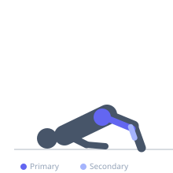
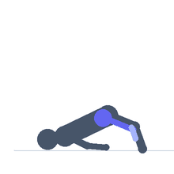

Exercise guide / Stability Ball Hamstring Rollout
Stability Ball Hamstring Rollout
A hamstring exercise and hip mobility drill performed with the heels on a stability ball. From a supine bridge position with heels on the ball, the exerciser rolls the ball toward the hips by bending the knees (hamstring curl) and then rolls it back out to full extension. The instability of the ball demands continuous core and hip stabilization, while the leg curl motion provides a hamstring strength stimulus through a range that includes hip extension. Used in both rehabilitation and functional training.
Primary muscles
biceps femoris long head
semitendinosus
gluteus maximus
Secondary muscles
soleus
Stabilizers
transverse abdominis
erector spinae
Equipment
No Equipment (Bodyweight)


Starting position
- Lie on your back with both heels on top of a stability ball. Arms are at the sides for balance. Drive the hips up into a bridge position, forming a straight line from heels to shoulders.
Setup
- Use a stability ball sized appropriately for your height (55-65 cm is standard). The ball should be stable and fully inflated.
Steps
- Step 1: Begin in the supine bridge with heels on the ball and hips elevated.
- Step 2: Bend both knees and roll the ball toward the hips, curling the hamstrings.
- Step 3: Hold briefly with the ball under the bent knees and hips fully extended.
- Step 4: Slowly roll the ball back out to the straight-leg bridge position. Repeat.
Coaching cues
- Keep the hips high — squeeze the glutes to prevent hip drop during the rollout
- Slow the rollout — that is the most challenging and productive phase
- Press the heels into the ball throughout — this keeps the hamstrings engaged
Breathing
- Exhale as you curl the ball in. Inhale as you roll it back out.
Range of motion
- Full extension of the leg at the rollout and full knee bend at the curl-in. Hips stay elevated throughout.
Tempo
- 2s curl in, 1s hold, 3s slow rollout.
Common mistakes
- Letting the hips drop during the rollout — the bridge height must be maintained throughout
- Rushing the rollout — the eccentric is where most of the hamstring challenge occurs
- Using a ball that is too large or too small for the exerciser's leg length
Safety
- If hamstring cramping occurs during the curl, reduce range and stretch between sets
- If lower back pain occurs, reduce the bridge height or perform from a modified position
Training
- endurance: 8–15 reps
- endurance: 2–3 sets
- Rest: {'endurance': 60}